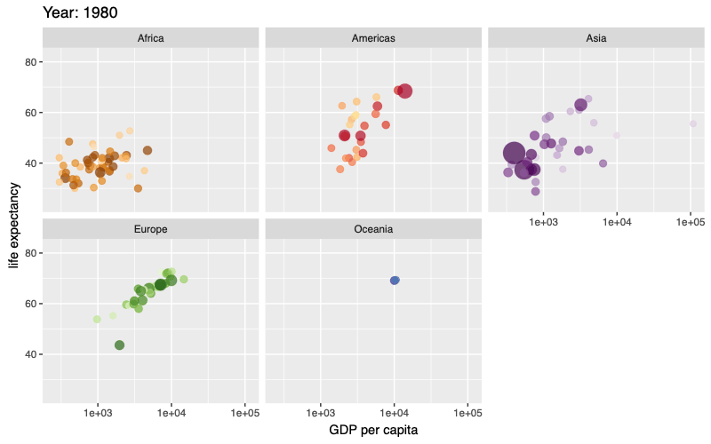
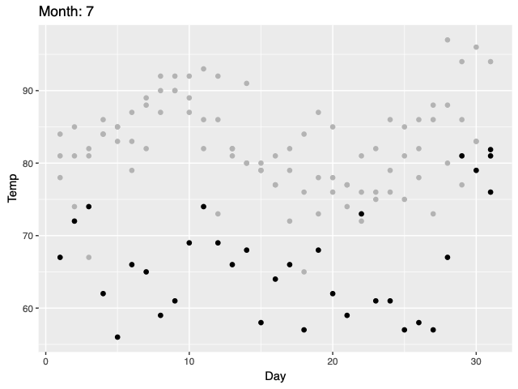

gganime renders a ggplot2 plot written with gganimate syntax as an animated SVG. The output is a self-contained HTML widget powered by Anime.js (through the animejs package), instead of a GIF or a video.
Because the animation is a single SVG with a timeline over its attributes:
- it stays sharp at any size, since the marks are vectors rather than a raster of fixed pixels;
- the file holds one copy of the scene plus per-element keyframes, not one image per frame;
- it plays in the browser with a scrub bar, so a reader can pause and step through frames.
Installation
Install the development version from GitHub with:
# install.packages("pak")
pak::pak("long39ng/gganime")gganime needs animejs (>= 1.1.0).
Usage
Write the plot exactly as you would with gganimate, then call anime() instead of animate(). Here transition_time() animates over a continuous variable, sizing each country’s bubble by population and filling in the {frame_time} label between years:
library(ggplot2)
library(gganimate)
library(gapminder)
library(gganime)
p <- ggplot(gapminder, aes(gdpPercap, lifeExp, size = pop, colour = country)) +
geom_point(alpha = 0.7, show.legend = FALSE) +
scale_colour_manual(values = country_colors) +
scale_size(range = c(2, 12)) +
scale_x_log10() +
labs(title = "Year: {frame_time}", x = "GDP per capita", y = "life expectancy") +
transition_time(year) +
ease_aes("linear")
anime(p)
A shadow_mark() leaves earlier frames behind the current one:
p <- ggplot(airquality, aes(Day, Temp)) +
geom_point() +
transition_time(Month) +
shadow_mark(colour = "grey70") +
labs(title = "Month: {frame_time}")
anime(p)
anime() returns an htmlwidget, so it prints in the RStudio Viewer, embeds in R Markdown and Quarto, and saves with htmlwidgets::saveWidget(). Loading gganime also makes a bare gganimate plot print through anime() at the console; set options(gganime.autoprint = FALSE) to keep gganimate’s own output.
In Shiny, use gganimeOutput() and renderGganime().
Supported features
- Transitions:
transition_states(),transition_time(),transition_reveal(). - Geoms: points, lines and paths, bars and columns, areas and ribbons.
-
enter_*()/exit_*(),ease_aes(), and per-frame labels in the title, subtitle, and caption. -
shadow_mark().
Anything else stops with a message naming the alternative. Current limits include faceted plots (only a single panel renders), non-Cartesian coordinate systems, shadow_wake() / shadow_trail(), and view_*() other than view_static().